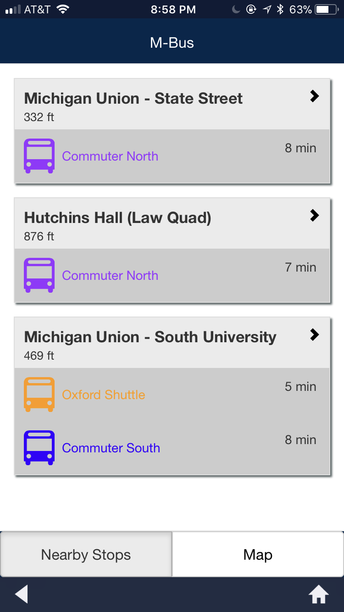
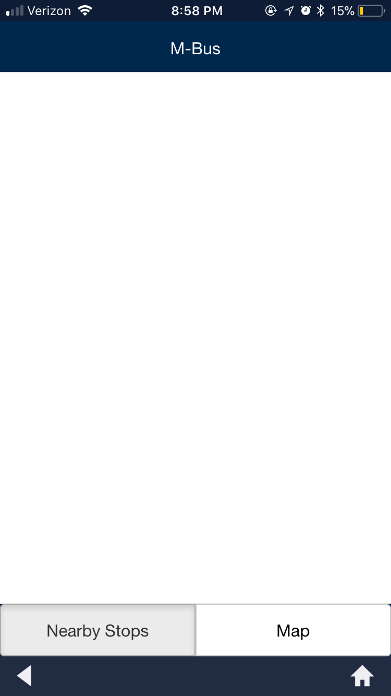

Work Environment: Team of Four
Role: Usability Researcher
Summary
This was a semester-long group project where I worked with three other individuals to research the M-Bus app. The M-Bus app is a transportation app that University of Michigan students, faculty, and visitors use to navigate the university's bus system. Our research uncovered several issues with the app, including inaccurate bus arrival time estimates, the omission of popular features from previous versions, and unresponsiveness.
Background Information and Research Questions
My group chose to
research this app because the university had recently rolled out a
new version; however, many of us had poor experiences with it and
were curious how other users felt. We also believed the large
amount of passengers of the university's bus system would benefit
from our research if we defined weaknesses and suggested improvements.
Therefore, our research questions were "Between the old version and
the new version, which aspects of the app do users find most
helpful or frustrating? Do these aspects significantly affect their
decision to use the new version?"
Competitive Analysis
First, we started with a competitive analysis. We focused on analyzing other transportation mobile apps, such as SpartaRide (the bus app used at Michigan State University), CATA (Capital Area Transportation App, used for the area near Penn State), Easy BART (used for San Francisco's Bay Area Rapid Transit) and MAVEN (GM's car renting application).

Survey
Next, we created a survey to understand how user's were interacting with the app. We broke up the survey questions into four different sections: user information, user goals, task difficulty ratings, and feature value ratings. We surveyed a convenience sample of 28 people, most of which were students at the university. Here are some of our notable results:


Survey Results
One of our main findings was, given the choice between the two versions of the app, a majority preferred the old version. A potential reason for this is the old version allowed users to view multiple bus routes (and the live location of buses on that route) on the map at a time, since this is the main difference between the two versions. On the other hand, 100% of those surveyed said they use the app to check bus arrival times, with only 29% using it to decide which bus to take. This is confusing because viewing multiple bus routes is a feature that would typically be used when users want to decide which bus to take; it is not necessary to look at the map to see bus arrival times. To understand why viewing multiple bus routes on the map was so valuable to users, we needed to conduct more in-depth research.
Personas
Before we moved on to conduct more research, however, we created personas based on the information we had already gathered. Here is an example of one of the personas we created:
Interviews
Next, each person in our group was responsible for interviewing two people, resulting in a total of eight interviews. All of the people we interviewed were students, but had differing levels of experience with the app. Our questions aimed to clarify student usage and opinions on the app. Afterwards, we transcribed and coded the interviews to extract some of the main themes present among the responses.
Interview Findings
Our interviews revealed that users tended to be primarily frustrated with the responsiveness of the app and the inaccuracy of the information. The new version displays a "Nearby Stops" screen when you open the app, which uses a user's location to display what buses will be arriving near them; however, it frequently malfunctions. This is particularly frustrating when someone is trying to see when different buses will be arriving, which explains why users then go to the map to look at the bus locations for themselves. In this situation, viewing multiple routes on the map would save time, hence the user frustration with the omission of this feature in the new version.
Functioning Nearby Stops

Malfunctioning Nearby Stops

Usability Testing
We then conducted four usability tests: three with students from our class, and one with our professor. Each researcher in our group was assigned to either be the facilitator, screen recorder, note taker, or timekeeper, with the positions rotating for each test. Our findings showed that users tended to make errors when deciding which bus would take them to their intended destination, specifically confusing north-bound buses with south-bound buses and vice versa. Our professor also had considerable trouble since she wasn't familiar with the bus routes themselves, proving the app to be confusing for new users.
Final Thoughts
Through our semester-long research, we uncovered several issues with the newest version of the MBus app, such as unresponsiveness, inaccurate information, and added features that didn't improve the user experience. As a result of these issues, many users expressed frustration, with some choosing to avoid using the app altogether. This project not only exposed me to different usability research methods, but allowed me to analyze an app that was relevant to a large audience. Unfortunately, the scope of this project did not include being able to act on these usability issues to make improvements.